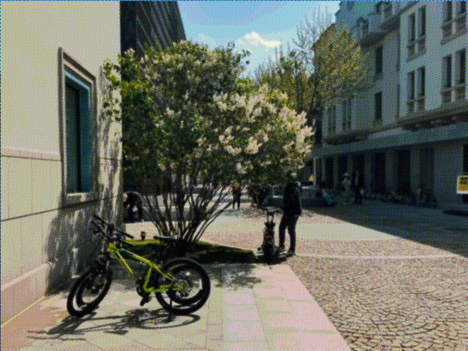
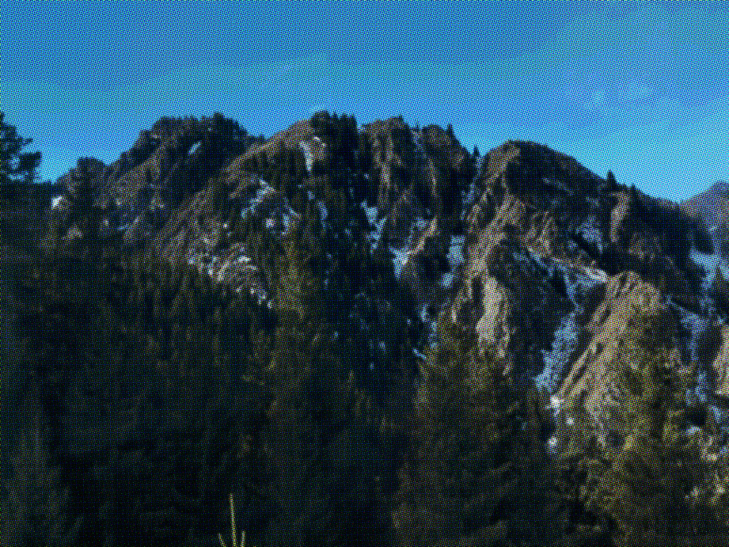
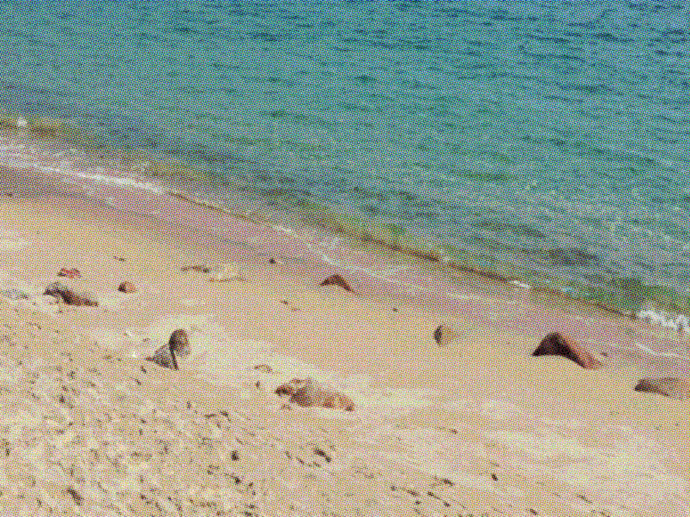
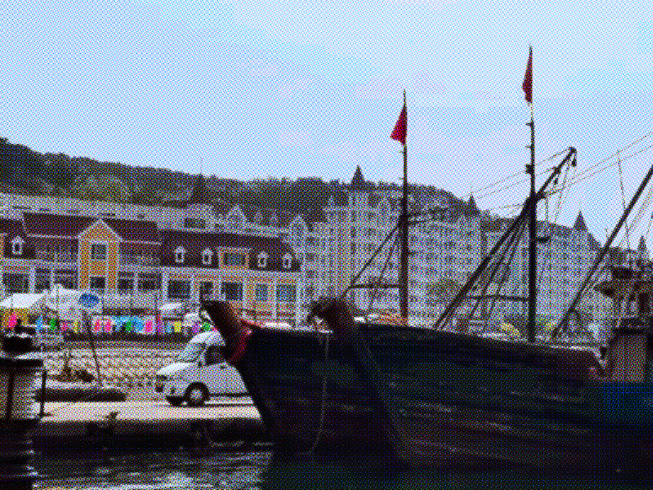

空景镇坐落于东南沿海，背靠青翠群山，面朝蔚蓝大海。镇内原始森林连绵数十里，溪流穿镇而过。这里四季分明，春有鲜花遍野，夏可避暑听涛，秋来层林尽染，冬日云雾缭绕如仙境。 为打造高品质生态旅游目的地，空景镇政府于2260年上旬启动“小镇焕新”计划，在保护自然风貌的同时，全面提升人文景观与旅游服务设施。经过数月改造，镇图书馆完成重新装修，多家咖啡馆、精品旅馆及手工艺工坊陆续开业，为这座山海小镇注入了新的活力。 始建于2210年的空景镇图书馆是镇上最古老的公共建筑之一。此次修缮保留了石墙与木梁结构，内部增设了数字阅览区、地方文献室及儿童绘本角。馆藏新增了关于本地地质、海洋生态及民俗文化的专题书籍，并特别开辟“昼湖地质档案”展示柜，供游客了解北山溶洞的科考历程。 为满足游客多样化的需求，镇旅游发展办公室引入了一批特色服务业态如海景咖啡厅、温泉水疗馆、北山街集市夜会。镇长在验收时表示：“我们希望通过这些举措，让游客不仅欣赏到空景镇的自然之美，也能感受到这里的人文温度。” 据悉，未来小镇还将定期举办读书会、艺术节等活动，进一步丰富旅游体验。

徒步穿行千年古树林，呼吸最纯净的空气。

绵延数里的细沙海岸，观潮起潮落，享渔舟唱晚。

品尝现捕海鲜，体验渔家生活。
从省城驱车约3小时可达，或乘坐高铁至“空景站”转旅游专线。详细可咨询空景镇旅游中心（联系方式：hollowsight@foxmail.com）。